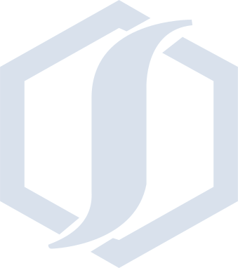
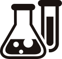

特別コンテンツ 03
商社とは
堺商事は化学品を専門に取り扱う商社ですが、商社が実際どのように社会に貢献しているのかを理解するのは難しいかもしれません。このコンテンツでは、商社について詳しくお伝えしていきます。
商社とは
輸出入貿易ならびに国内における
物資の販売を業務の中心にした会社
商社の特徴
総合商社と専門商社に
区分される
総合商社
多種多様な商品を取り扱っています。取扱商品の幅広さから、「カップラーメンからロケットまで」という言葉もあるほどです。
専門商社
機械や食品、アパレル関連など、特定分野に特化した商品を取り扱っています。扱う商品が限定されているため、その分野において専門的な知識を持って品物を扱います。
堺商事は...専門商社
堺商事は化学品の専門商社です。当社は、化学品関連の売上が全体の90％以上となっています。スマートフォンなどの電子機器をはじめ、プラスチック製品、インク・塗料、化粧品、医薬品、紙オムツなど私たちの身の回りにある多くの製品の原材料を取り扱っています。

商社の仕事
企業と企業をつなぐ役割
商社は、売りたい企業と買いたい企業を結び付け、取引の仲介をすること（トレーディング）が主な仕事となり、その仲介手数料が商社の利益となります。（BtoBビジネスと呼ばれます。）
取引先企業から「こんな商品・資材・原料が欲しい」という依頼を受けて、それに合った商品を取り扱っているメーカーを探します。国内に取り扱い会社がなければ、海外まで目を向けて探すケースもあります。逆に、メーカーから依頼を受けて、販売先企業を探すケースもあります。
商社を介すことにより、企業は今まで取引がなかった新たな企業に商品を使ってもらうことができたり、貿易業務の煩雑な手続きを商社に引き受けてもらえる、幅広い仕入先・販売先を持つ商社の情報を利用できる、というメリットがあります。

素材メーカー
堺商事
製品メーカー
堺商事では...
堺商事では、主に原材料や素材を取り扱うメーカーから商品を仕入れ、それらを使ってモノづくりをしている製品メーカーに納入するBtoBビジネスを行っています。また、単に商品を仲介するだけではなく、取引先から信頼いただき、ビジネスのパートナーとして選ばれ続ける商社であるために次の３点を強みとしています。
専門性
フットワークの軽さと専門性を活かし、大手商社も手を付けていない領域の販路を開拓しています。
対応力
お客様のニーズに沿った、丁寧な対応と細やかなサービスにより、ビジネスチャンス拡大に貢献しています。
情報力
海外拠点を通じて得られる最新の情報を集約し、国内外の取引先へ鮮度の高い正確な情報を提供しています。
活躍の舞台は世界！
広大なマーケット
商社の活躍の舞台は国内にとどまりません。国内取引だけではなく、海外企業の商品を国内企業へ紹介したり、日本の質の高い商品を海外企業へ販売する等、国を超えてグローバルにビジネスを展開しています。
堺商事では...
海外出張の機会も多く、様々な国や地域の情報を集めて新たなビジネスを生み出すチャンスもあります。
現在では、海外拠点としてアジア、オセアニア、中東の8か所にオフィスを設置し、情報ネットワークを構築しています。取引先は約30か国に及んでおり、海外でも活躍できるフィールドがあります。
- イスタンブール（駐在員事務所）
- SAKAI TRADING CO., LTD. (Istanbul)
Irtibat Burosu - 上海
- 堺商事貿易（上海）有限公司
- シドニー
- SAKAI AUSTRALIA PTY LTD.
- スラバヤ（合弁会社）
- PT.S&S HYGIENE SOLUTION
- ソウル
- SAKAI TRADING KOREA CO., LTD.
- 台北
- 台湾堺股份有限公司
- ニューヨーク
- SAKAI TRADING NEW YORK INC.
- バンコク
- SAKAI TRADING (THAILAND) CO., LTD.
活かせる語学力
海外展開している企業でも、意外と語学を使わない、なんてケースもあります。
堺商事ではあなたが培ってきた語学力を活かして働く機会が多くあります。
よく使う言語：英語、中国語

さらに学ぶ

世界は、近い。